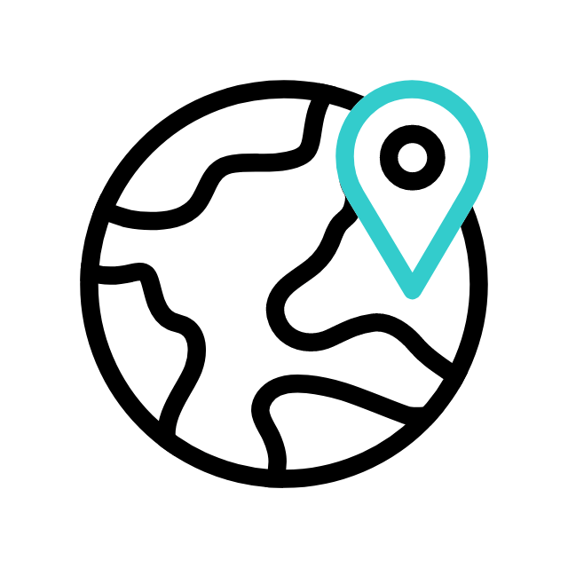
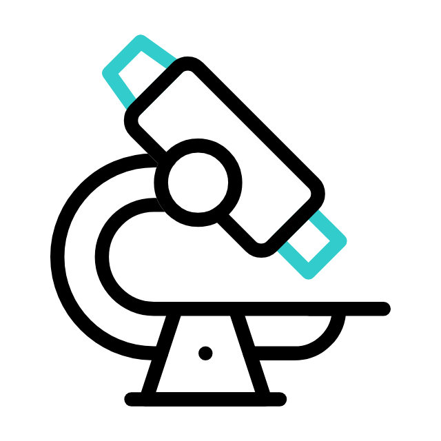

Scientific intelligence,
agri‑technology.
The research and technology arm of the ecosystem.
Where data becomes decisions.
At a superficial level, this appears to be a soil testing business.
Here is where every observer's perspective is wrong.
Every soil test creates a permanent, unique data asset. At scale, this becomes the most comprehensive agricultural intelligence database ever assembled.
From soil to intelligence
in 3 minutes.


Not soil testing.
Intelligence infrastructure.
Soil Intelligence
Every farm's soil profile, permanently recorded. At national scale, this becomes an unmatchable dataset for agricultural advisory, policy, and financial decision-making.
A government soil health card scheme.
The most granular agricultural soil database on earth — farm-level, GPS-tagged, permanently owned. No competitor can replicate a 7-year head start.
Advisory Revenue
Data-driven fertiliser and input recommendations to large manufacturers. Companies pay for access to verified, granular soil data across millions of farms.
Selling fertiliser recommendations.
A B2B data licensing business. Agri-input manufacturers — Coromandel, UPL, IFFCO — pay premium for verified demand signals from 140 million farmers. Near-zero marginal cost.
The McKinsey of Agriculture
Institutional intelligence platform for subscribers: lenders, insurers, governments, international organisations. Bloomberg Terminal for the global food system.
A subscription analytics product.
The irreplaceable intelligence layer for $2T in global agricultural finance. World Bank, FAO, ADB, sovereign lenders — all operating blind without verified ground-truth data. Kropbook ends that.
Adjudication
The United States Department of Defense challenged Kropbook's patent.
Kropbook won.
This is not a legal result. It is proof that Kropbook's innovation is genuinely original. Confirmed by international adjudication against the most rigorous challenger in the world.
Proprietary sensing
infrastructure.
Soil Analysis Device
Farm-scale, village-level operation. Operated by non-scientists. Results in 3 minutes. Data auto-sent.
Residue Analysis Device
Farm-gate pesticide and chemical residue detection. Turns rejection into prevention. Farmers know before the buyer rejects.
Future Devices
- Seed viability detection
- Pathogen detection
- Micro-climate prediction
- Pest forecasting
- Post-harvest analysis
Eight revenue streams.
One integrated platform.
Agricultural Supply Chain Operations
ActiveActive since 2018
End-to-end from farm to institutional buyer. Non-negotiable for buyers requiring consistent quality.
Payment Rail & Financial Identity
ActiveActive
Instant farmer payments. GST-compliant documentation. Financial identity creation.
AgriOS Platform Licensing
In DevelopmentIn Development
Annual SaaS contracts for institutional buyers, lenders, insurers, governments.
Agricultural Credit Intelligence
In DevelopmentIn Development
NPA reduction for banks through verified farmer data. Pure data licensing.
Government & Policy Contracts
In DevelopmentIn Development
State + central + multilateral: World Bank, FAO, ADB.
Global Export Traceability
PlannedPlanned
EU Farm to Fork · UK due diligence · US FSMA compliance.
Carbon & Climate Intelligence
PlannedPlanned
Verified soil carbon credits for the $50T ESG institutional market.
Global Intelligence Subscriptions
FutureFuture
Bloomberg Terminal of agriculture. 85% gross margin target.
Explore the AgriOS Platform
The operating system layer that powers every revenue stream.
Patent
Kropbook's soil testing device patent application — directly visible below. No download required.
The patent PDF remains in the private local documents folder and is reviewed from the local documents section.